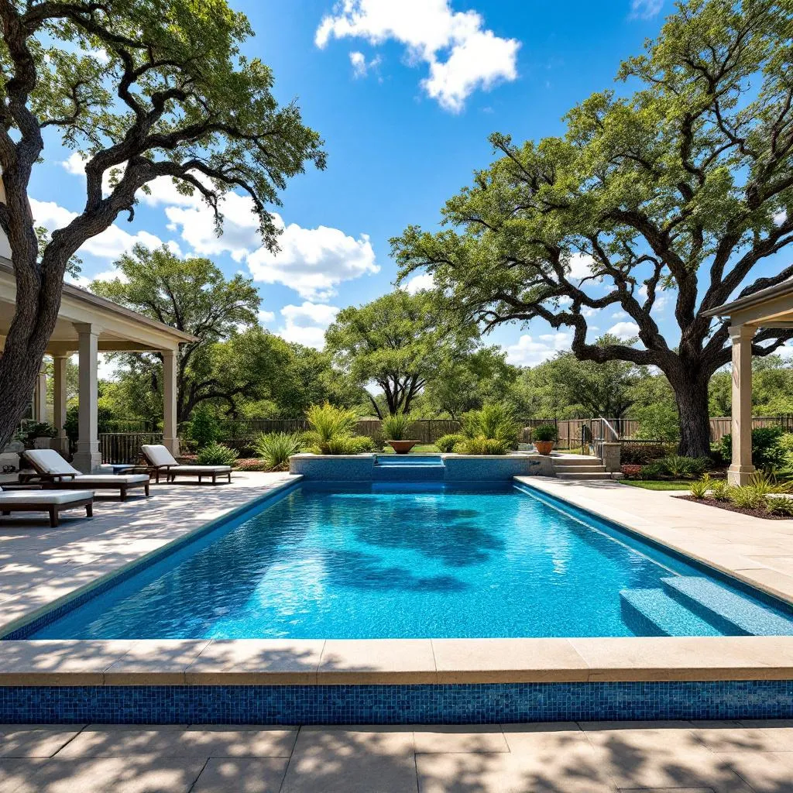

San Antonio is a pool town. With 300+ days of sunshine, summer highs that regularly push past 100°F, and a military community (Joint Base San Antonio alone accounts for tens of thousands of homeowners), backyard pools are practically standard-issue across Bexar County. But all that heat, UV exposure, and the notoriously hard water from the Edwards Aquifer take a toll on pool surfaces that homeowners in milder climates never deal with.
If your pool surface is rough, stained, cracking, or simply past its prime, resurfacing is the fix — and the first question every homeowner asks is: how much is this going to cost? This guide breaks down real 2026 pricing for San Antonio pool resurfacing by surface type and pool size, explains the factors that move your quote up or down, and covers what a professional resurfacing project actually includes so you know exactly where your money goes.
Pool Resurfacing Cost by Surface Type & Pool Size
Pricing varies based on the finish material you choose and your pool's interior surface area (measured in square feet, not gallons). Here's what San Antonio homeowners are paying in 2026:
| Surface Type | Small Pool (<400 sq ft) |
Standard Pool (400–600 sq ft) |
Large Pool (600+ sq ft) |
|---|---|---|---|
| White Plaster | $3,500–$5,000 | $5,000–$7,000 | $7,000–$10,000 |
| Quartz Aggregate | $5,000–$7,000 | $7,000–$10,000 | $10,000–$13,000 |
| Pebble Tec | $6,500–$9,000 | $9,000–$12,000 | $12,000–$15,000 |
| Tile & Coping (add-on) | $1,500–$3,000 | $2,500–$4,500 | $4,000–$6,000 |
Factors That Affect Your Pool Resurfacing Cost
The numbers above are ranges for a reason. Several variables will push your specific quote higher or lower:
1. Surface Material
This is the single biggest cost driver. White plaster (marcite) is the most affordable finish. Quartz aggregate finishes like Diamond Brite and QuartzScapes sit in the middle, offering substantially better durability. Pebble finishes (PebbleTec, PebbleSheen) are the premium option and the most durable surface available for residential pools. The material you choose determines both the upfront cost and how many years until your next resurfacing project.
2. Pool Size and Shape
Resurfacing is priced by interior surface area — walls, floor, steps, benches, and ledges. A simple rectangular pool has less surface area per gallon than a freeform pool with a spa, tanning ledge, and raised wall. Always get a quote based on a measured surface area, not a rough estimate.
3. Existing Surface Condition
A pool with minor wear resurfaces faster and cheaper than one with severe delamination, deep cracks, or hollow spots where the old plaster has separated from the shell. Heavy prep work — chipping out failed plaster, grinding rough areas, or dealing with previous poorly-applied coatings — adds labor hours and cost.
4. Structural Repairs
San Antonio's caliche and limestone soil expands and contracts seasonally, putting stress on pool shells. If your pool has structural cracks (through the concrete shell, not just surface plaster cracks), those need to be repaired with staples, epoxy injection, or rebar reinforcement before the new surface goes on. Structural repair typically adds $500–$3,000 depending on severity.
5. Edwards Aquifer Hard Water
San Antonio's high-calcium fill water requires careful startup chemistry management. Reputable contractors include startup chemical treatment in their price. If your estimate does not mention startup chemistry, that is a red flag — improper startup is the leading cause of premature surface failure in our market.
6. Access and Logistics
Pools with tight backyard access, steep grades, long distances from the street to the pool, or limited staging areas may cost more due to the additional labor required to move materials and equipment. Pools behind fences with narrow gates sometimes require equipment to be hand-carried rather than wheeled in.
What's Included in a Pool Resurfacing Project
A professional pool resurfacing project in San Antonio should include all of the following. If any of these items are missing from a contractor's quote, ask about them before signing:
- Pool draining — Pumping out the existing water (typically into the street or storm drain with proper city notification)
- Old surface removal — Chipping, grinding, or bond-coating the existing plaster to create a proper bonding surface for the new material
- Surface preparation — Cleaning the exposed shell, patching minor imperfections, and applying bond coat if needed
- Crack repair — Addressing surface cracks and minor structural cracks with appropriate repair methods
- New finish application — Professional trowel application of your chosen finish material by an experienced crew
- Pool fill — Refilling the pool with water (some contractors include the water cost, others do not — clarify this)
- Startup chemistry — Balancing pH, alkalinity, calcium hardness, and sanitizer levels during the critical first fill — especially important with San Antonio's hard water
- 30-day curing support — Guidance and follow-up visits during the curing period, when the new surface is most vulnerable to staining, scaling, and discoloration
How to Choose a Pool Resurfacing Contractor in San Antonio
Pool resurfacing is one of the trades where the quality of the application crew determines how long your investment lasts. A perfectly-mixed finish applied by a rushed or inexperienced crew can fail in 3–5 years. The same material applied by skilled tradespeople who manage the process properly will last 15–20+ years. Here is what to look for:
- TDLR licensing: Texas requires all pool contractors to hold a valid license through the Texas Department of Licensing and Regulation. Verify any contractor's license at tdlr.texas.gov before signing a contract. Unlicensed work can void your homeowner's insurance and leave you without recourse if something goes wrong.
- Written, itemized quotes: Your estimate should break out surface prep, crack repair, finish material, tile/coping (if applicable), fill water, and startup chemistry as separate line items. Lump-sum bids hide what you are and are not getting.
- Warranty terms in writing: Ask for the warranty on both materials and workmanship. Reputable contractors in San Antonio typically offer 3–7 years on plaster, 5–10 years on quartz, and 10–15 years on pebble finishes. Get it in writing — verbal warranties are worthless.
- Local experience with SA water chemistry: A contractor who has resurfaced hundreds of pools fed by Edwards Aquifer water knows how to manage calcium scaling, startup procedures, and the specific challenges of our fill water. National franchise outfits without local experience often underestimate these factors.
- References you can verify: Ask for 3–5 recent San Antonio project references with photos. A contractor who cannot produce them is not worth your risk.
Frequently Asked Questions
How much does pool resurfacing cost in San Antonio?
Pool resurfacing in San Antonio costs between $3,500 and $15,000 in 2026, depending on the finish material and pool size. White plaster is the most affordable at $3,500–$10,000. Quartz aggregate runs $5,000–$13,000. Pebble finishes (PebbleTec/PebbleSheen) cost $6,500–$15,000. Tile and coping replacement, if needed, adds $1,500–$6,000. The average San Antonio homeowner spends $6,000–$10,000 on a complete resurfacing project with a mid-range quartz or pebble finish.
What pool surface lasts longest in San Antonio's water?
Pebble finishes (PebbleTec, PebbleSheen, PebbleFina) last the longest in San Antonio — typically 15 to 25 years with proper water chemistry maintenance. They resist the scaling and etching caused by the Edwards Aquifer's high-calcium hard water far better than standard plaster. Quartz aggregate is the runner-up at 12–18 years. White plaster, while affordable, typically lasts only 8–12 years in San Antonio's demanding conditions.
How long does pool resurfacing take?
Most pool resurfacing projects in San Antonio take 7 to 10 days from drain to swim-ready. The breakdown is typically: 1–2 days for draining and surface preparation, 1 day for the new finish application, and 5–7 days for filling, startup chemistry, and initial curing. If structural repairs or tile and coping work are included, add 1–3 days. Weather delays are rare in San Antonio but can occur during heavy spring rain events.
Does pool resurfacing increase home value?
Yes. In Bexar County's real estate market, a freshly resurfaced pool with updated tile and coping can add $15,000–$25,000 to perceived home value. Buyers notice a rough, stained pool immediately during showings, and it often becomes a negotiation point that costs the seller more than resurfacing would have. A $5,000–$10,000 resurfacing project typically delivers a strong return, particularly in neighborhoods like Stone Oak, Alamo Heights, and the Hill Country suburbs where pools are expected.
When is the best time to resurface a pool in San Antonio?
The best time to resurface a pool in San Antonio is October through February. Off-season scheduling means you avoid losing prime summer swim time, contractors typically have more availability and scheduling flexibility, and the cooler ambient temperatures can actually benefit the curing process for plaster and quartz finishes. If you schedule in late fall or winter, your pool will be swim-ready well before Memorial Day weekend.
Get Your Free Pool Resurfacing Estimate
Alamo Pool Resurfacing provides free, no-obligation on-site estimates for San Antonio-area homeowners. We'll measure your pool, assess the surface condition, and walk you through every finish option with samples — so you can make an informed decision, not a pressured one.
📞 Call (726) 268-5597Or request an estimate online →